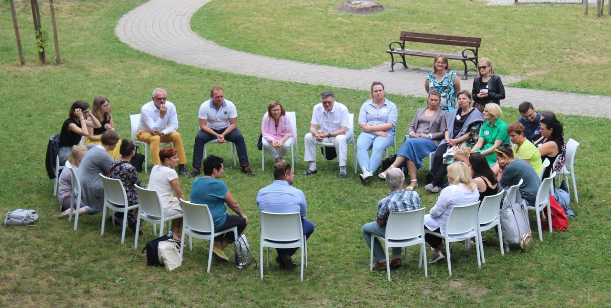
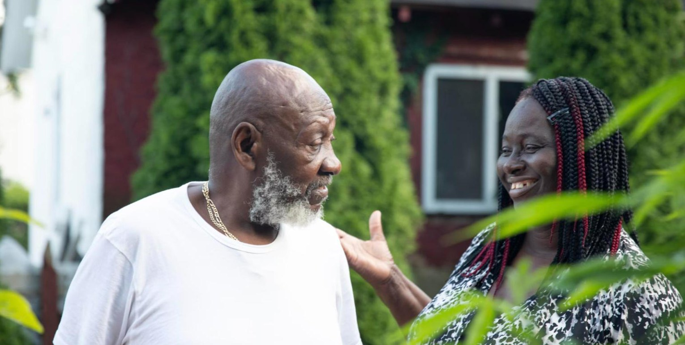

From a five-minute form to thousands of listeners
You tell us who you help. We write the ad, record it and put it on the air, and a local sponsor pays for all of it.
Four steps, and we do three of them
Most small groups have never bought an ad, so we built this for people who have never done it before.
Apply
Start by telling us who you help and what you'd like listeners to do. The form takes about five minutes.
Approve the script
We'll send you a draft within a few days. Change anything you like until it sounds like you wrote it.
We record it
Once you approve the script, we record the finished ad and send you a copy to keep.
It airs
Your ad plays to thousands of local listeners, or even on a national scale, and we report the results.
What happens along the way

You apply
The application asks for your name, your group, your town and what you want listeners to do. That last part is the heart of the ad, and one sentence is enough.
You do not need a logo, a budget or any experience with advertising.

A sponsor picks your cause
Approved causes go on our waiting list. Sponsors choose the causes they want to put on the air, and gifts of any size add up until your ad is paid for.
We work through the list in order, so applying early holds your place.

You approve the script
We send you a draft within a few days of your cause being funded. Change anything you like until it sounds like you wrote it.
Nothing is recorded until you say yes.

We record it and it goes on the air
We record the ad and book the airtime on local radio and on streaming audio services such as Spotify and Pandora, aimed at listeners in your own area.
Each ad runs for two to four weeks, and the finished recording is yours to keep.
Why audio reaches people other ads miss
People listen in the car, in the kitchen and at work, which is where a neighbor is most likely to hear about a food pantry three streets away.
What 30 seconds sounds like
These are sample scripts we wrote to show the style. Each one says who is speaking, what is offered and what to do next, in plain words.
The Riverside Food Pantry is open every Saturday from nine to noon. If your family needs groceries this week, come by. No paperwork and no questions.
The volunteer fire company needs a new rescue truck. The pancake breakfast is this Sunday from seven to eleven, and every plate helps pay for it.
Free after-school tutoring starts Monday at the community center, for grades three through eight. Sign-up takes two minutes.
The town cleanup is Saturday at nine. Gloves, bags and coffee are provided. Bring a neighbor and meet at the park entrance.
Ready when you are
The application takes about five minutes, and it holds your place in line.
Apply for a free ad See who qualifies